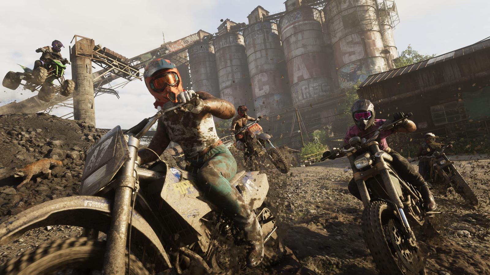

Тест: угадай регион Леониды по кадру
Обновлено:

Коротко
- 10 официальных кадров Rockstar — угадайте регион.
- После каждого ответа — факт о регионе и его реальном прототипе.
- В конце — ваш «статус» в Леониде.
Содержание
Как играть
В Леониде шесть официальных регионов — от неонового Вайс-Сити до лесов Mount Kalaga. Мы взяли 10 официальных кадров Rockstar и спрятали подписи. Смотрите на детали: цвет воды, вывески, людей, технику. После каждого ответа — объяснение и факт, которого нет в трейлерах. Подсказка: читали Карта GTA 6: штат Леонида и все регионы — будет проще.
Тест
Ещё тесты и инструменты: Тест: кто ты — Лусия или Джейсон? · Отсчёт до GTA 6 в вашем часовом поясе · Чек-лист: готов ли ты к релизу GTA 6
Источники: Официальные скриншоты Rockstar Games; описания регионов — Rockstar Games (по GamesRadar+); реальные факты — Florida Fish and Wildlife Conservation Commission, Florida Department of Transportation.